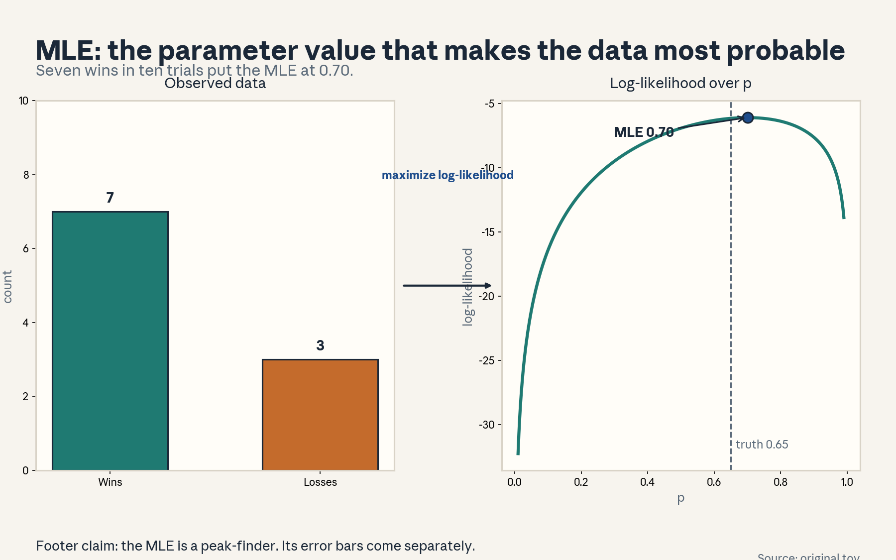
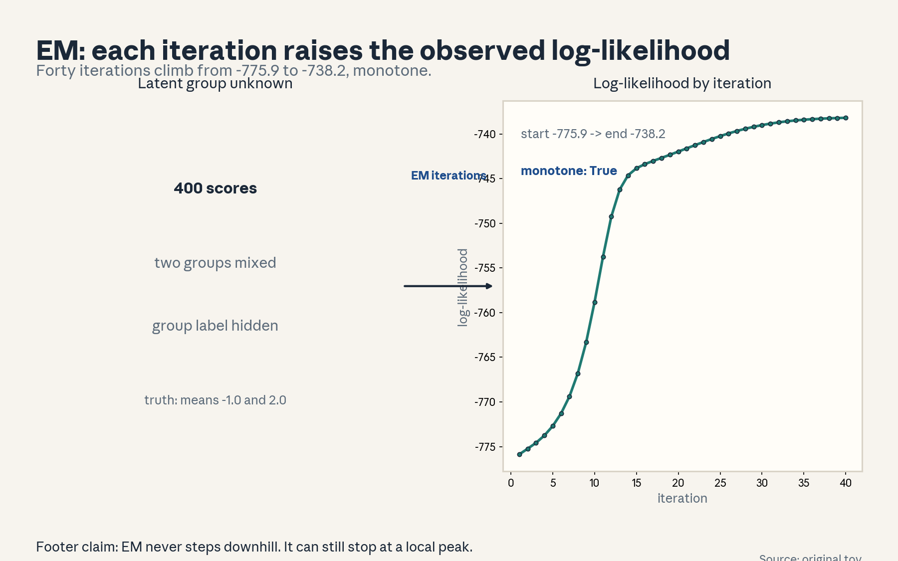
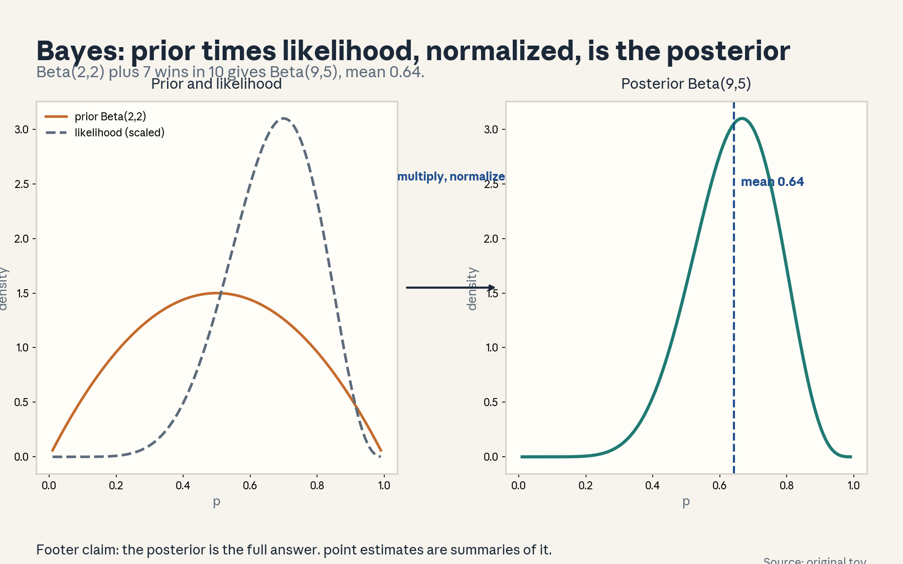
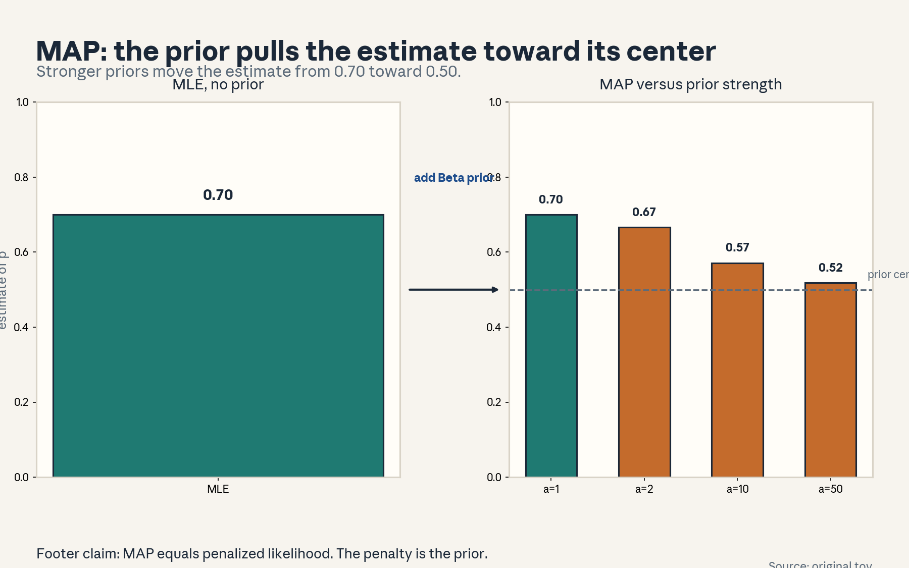
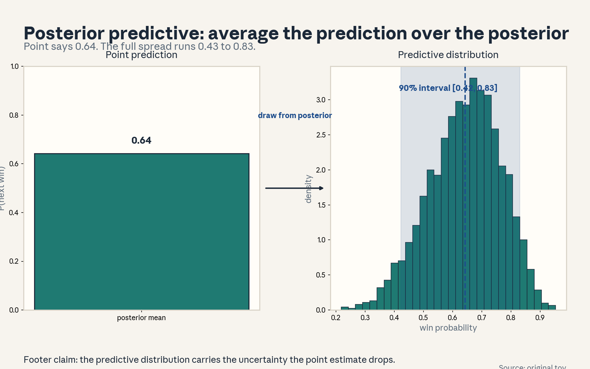
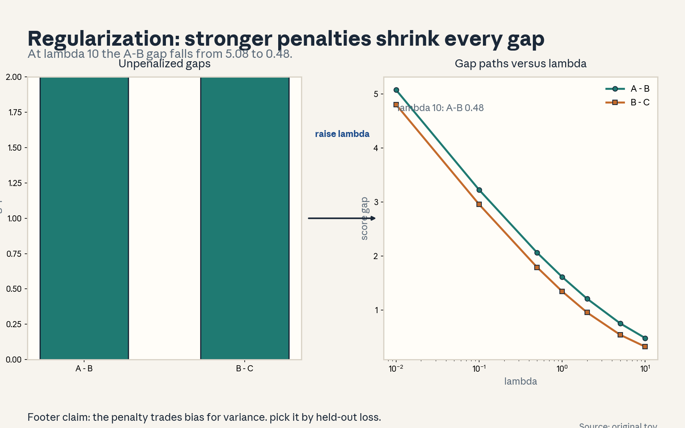
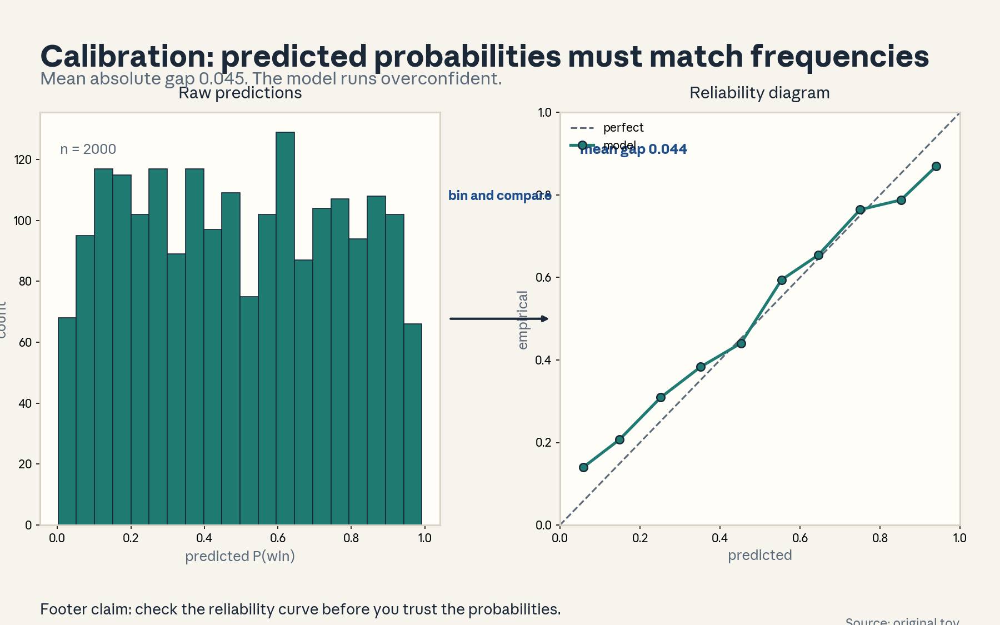
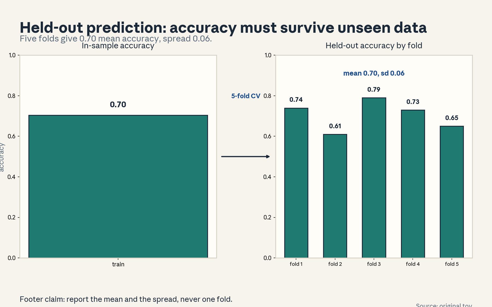

U03 · Choice estimation and Bayesian learning
U03: Choice estimation and Bayesian learning
Prerequisites: P07 (estimation), P09 (optimization), P18 (Bayesian inference). Local remediation opens this lesson.
Provenance
Sessions S05 (“Learning to predict choice. Latent-variable estimation with MLE”) and S06 (“Bayesian estimation and finetuning”) are PLANNED (7 Oct and 12 Oct 2026). All twelve concepts are taught as independent theory: PLANNED / SOURCE ATTRIBUTION PENDING.
Local remediation: Bayes, log-likelihood, and the EM lower bound
Bayes rule: p(theta | D) = p(D | theta) p(theta) / p(D). The log-likelihood l(theta) = log p(D | theta). With a latent variable z, the observed likelihood is p(D | theta) = sum_z p(D, z | theta). The EM lower bound: for any distribution q(z), log p(D | theta) >= E_q[log p(D, z | theta)] - E_q[log q(z)]. EM alternates: E-step sets q to the posterior p(z | D, theta). M-step maximizes the bound in theta. The bound touches the true likelihood after each E-step, so the likelihood never decreases.
Russian-doll ladder for the major mechanism (Bayesian updating)
- Shell 0: How do we combine what we believed before with what the data says?
- Shell 1: Toy: prior Beta(2,2) on a coin bias. Observe 7 wins in 10 trials.
- Shell 2: Prior density, likelihood, posterior density. Conjugacy gives Beta(9,5).
- Shell 3: Rule: posterior proportional to prior times likelihood.
- Shell 4: Derive the Beta-Binomial update. Implement it.
- Shell 5: Check: with no data the posterior equals the prior. With infinite data it concentrates at the MLE.
- Shell 6: Change one factor: strengthen the prior. Predict shrinkage, measure it (figure u03_f04).
- Shell 7: Counterexample: a dogmatic prior (point mass) never learns.
- Shell 8: Compare MAP with full posterior under equal data.
- Shell 9: Extension: does a hierarchical prior beat a fixed prior on held-out log-loss? Falsifiable: paired test.
- Shell 10: Production: posteriors drive uncertainty-aware ranking. Stakeholder decision is when to abstain.
Not-yet-understood dependency list
- MCMC sampling for non-conjugate posteriors: named, not implemented here.
- Variational approximations: the ELBO is stated in U03-C03. Full VI is an extension.
- Finetuning of large models: U03-C07 covers the conceptual link, not the systems.
cs329h-U03-C01: MLE
Contract 1. Source mapping, scope, objectives, dependencies. PLANNED / SOURCE ATTRIBUTION PENDING (S05). Objective: define the MLE, compute it on a toy, and state its limits. Depends on P07.
Contract 2. Motivating question and tiny toy. Question: which parameter value makes the observed data most probable? Toy: 7 wins in 10 trials. True bias 0.65.
Contract 3. Plain-language mental model. The MLE is a peak-finder. Plot how probable the data looks under each candidate parameter. Pick the peak. It uses the data and nothing else.
Contract 4. Variables, units, shapes, assumptions. Parameter p in [0,1]. Likelihood L(p) = p^7 (1-p)^3. Log-likelihood l(p) = 7 log p + 3 log(1-p). Assumptions: IID trials, correct model family.
Contract 5. Justified derivation or mechanism. Differentiate: l’(p) = 7/p - 3/(1-p) = 0 gives p = 0.70. The second derivative is negative, so it is a maximum. Figure u03_f01 plots the curve and marks the peak at 0.70 with the truth at 0.65.
Contract 6. Computed numerical example. MLE 0.70, truth 0.65. The gap comes from sample noise: with n = 10 the standard error is sqrt(0.7*0.3/10) = 0.145. Same numbers as figure u03_f01.
Contract 7. Algorithm and minimal implementation. Closed form for Bernoulli. Grid search or Newton for general models. Five lines.
Contract 8. Correctness checks and expected output. Check 1: grid optimum matches 7/10. Check 2: the log-likelihood at the MLE exceeds its value at 0.65. Expected: 0.70.
Contract 9. Complexity, memory, statistical efficiency, stability, costs. Closed form O(n). The MLE is consistent and asymptotically efficient under regularity, but with n = 10 it is noisy and with separable data it diverges (U01-C06).
Contract 10. Nearest alternatives and selection boundaries. Alternative: MAP (adds a prior). Alternative: posterior mean (averages over uncertainty). Choose MLE for a fast point estimate. Choose Bayes when uncertainty matters.
Contract 11. Failure case, broken assumption, counterexample. Model misspecification: the MLE converges to the member of the family closest in KL, not to the truth. Counterexample: fitting a single coin bias to mixture data.
Contract 12. Research reading and falsifiable extension. Extension: compare MLE and MAP on held-out log-loss across sample sizes. Falsifiable: MAP wins at small n, the gap closes as n grows.
Contract 13. Assessment. Breadth: define the MLE in one sentence. Oral ladder through the derivative. Transfer: estimate click-through from 70 clicks in 100 shows. Failure diagnosis: the MLE sits at the boundary 1.0. Explain. Counterfactual: what if trials are dependent? Research: MLE under misspecification.
Contract 14. Lab and exercises. Lab U03 task 1 reproduces figure u03_f01. Exercises: (E1) derive p = 0.70. (E2) compute the standard error. (E3) show the boundary case. Keys in answer_keys/u03_keys.md.
Contract 15. Visual units, provenance, accessibility, audit rows. Figure visuals/u03_f01.png: lesson plate, source original toy, closed form, alt text “Bar chart of 7 wins and 3 losses. Arrow labeled maximize log-likelihood. Log-likelihood curve with peak marked at 0.70 and truth at 0.65.” Audit: before state data, after state curve, rule named. No conflict.

cs329h-U03-C02: latent variables
Contract 1. Source mapping, scope, objectives, dependencies. PLANNED / SOURCE ATTRIBUTION PENDING (S05). Objective: define latent variables and write the marginal likelihood. Depends on C01, P18.
Contract 2. Motivating question and tiny toy. Question: the data comes from two hidden groups. How do we model what we cannot see? Toy: 400 scores from two Gaussians, group labels hidden.
Contract 3. Plain-language mental model. A latent variable is a missing column in the spreadsheet. You sum (or integrate) over its possible values to get the likelihood of what you did see.
Contract 4. Variables, units, shapes, assumptions. Latent z_i in {1, 2}, group label. Observed x_i real. Marginal likelihood: p(x | theta) = sum_z p(z | theta) p(x | z, theta). Assumption: the latent structure (two groups) is correct.
Contract 5. Justified derivation or mechanism. The sum over z is the law of total probability applied per observation. Direct optimization is hard because the log of a sum does not split. EM (C03) handles it by working with the complete-data likelihood instead.
Contract 6. Computed numerical example. True means -1.0 and 2.0, sd 1.0, mixing weight 0.4. EM recovers means -0.99 and 1.97. Same numbers as figure u03_f02.
Contract 7. Algorithm and minimal implementation. Write the marginal likelihood by summing over z explicitly. Ten lines for the Gaussian case.
Contract 8. Correctness checks and expected output. Check: with z observed, the likelihood splits and each group’s MLE is the sample mean. Expected: recovery of the true means within noise.
Contract 9. Complexity, memory, statistical efficiency, stability, costs. Summing over z costs O(n * |z|) per evaluation. Latent structure adds parameters and non-convexity.
Contract 10. Nearest alternatives and selection boundaries. Alternative: integrate z out analytically when conjugate. Alternative: sample z with MCMC. Choose EM for point estimates. Choose MCMC for full uncertainty.
Contract 11. Failure case, broken assumption, counterexample. Non-identifiable latent structure: a mixture of two Bernoullis observed only through binary outcomes has a flat likelihood (verified during the build: every start gave -277.0138). The latent variable adds nothing identifiable there.
Contract 12. Research reading and falsifiable extension. Extension: test the number of latent groups by held-out likelihood. Falsifiable: more groups must win out of sample to be kept.
Contract 13. Assessment. Breadth: write the marginal likelihood. Oral ladder through the total-probability step. Transfer: annotator skill as a latent variable. Write the model. Failure diagnosis: the likelihood is flat in the latent parameters. Diagnose. Counterfactual: what if z is continuous? Research: identifiable latent structures.
Contract 14. Lab and exercises. Exercises: (E1) write the Bernoulli-mixture likelihood. (E2) prove its flatness. (E3) write the Gaussian-mixture likelihood. Keys in answer_keys/u03_keys.md.
Contract 15. Visual units, provenance, accessibility, audit rows. Figure u03_f02 shows the EM fit. The marginal-likelihood concept is a definition unit in the text. Logged.
cs329h-U03-C03: EM where applicable
Contract 1. Source mapping, scope, objectives, dependencies. PLANNED / SOURCE ATTRIBUTION PENDING (S05). Objective: derive the EM steps and run them on the Gaussian mixture. Depends on C02.
Contract 2. Motivating question and tiny toy. Question: how do we fit parameters when the group labels are absent? Toy: the 400-score two-Gaussian mixture.
Contract 3. Plain-language mental model. EM guesses the labels softly, fits the parameters to the soft labels, then re-guesses. Each round explains the data better than the last.
Contract 4. Variables, units, shapes, assumptions. Responsibilities r_i = p(z_i = 1 | x_i, theta), in [0,1]. M-step: weighted MLE. Assumption: the E-step posterior is computed exactly.
Contract 5. Justified derivation or mechanism. The E-step sets q(z) to the posterior, which makes the lower bound touch the true likelihood. The M-step maximizes the bound, so the true likelihood rises too. Hence monotone ascent. Figure u03_f02 shows 40 iterations climbing from -775.9 to -738.2, monotone, recovering means -0.99 and 1.97.
Contract 6. Computed numerical example. Start (0.5, 0.0, 0.5, 1.5, 1.5). End: alpha 0.42, means -0.99 and 1.97, sds near 1.0. Log-likelihood -775.9 to -738.2. Same numbers as figure u03_f02.
Contract 7. Algorithm and minimal implementation. E-step: responsibilities via Bayes. M-step: weighted means and variances. Twenty lines of NumPy.
Contract 8. Correctness checks and expected output. Check 1: likelihood never decreases (assert on diffs). Check 2: with true labels supplied, one M-step gives the supervised MLE. Expected: monotone climb to the true neighborhood.
Contract 9. Complexity, memory, statistical efficiency, stability, costs. O(n * |z|) per iteration. EM converges linearly. It can be slow near the optimum and it stops at local optima.
Contract 10. Nearest alternatives and selection boundaries. Alternative: direct gradient ascent on the marginal likelihood. Alternative: MCMC for posteriors. Choose EM for simplicity and stability. Choose gradients when the M-step has no closed form.
Contract 11. Failure case, broken assumption, counterexample. Local optima: different starts give different answers (verified: Bernoulli starts all stuck at -277.0). Counterexample: symmetric starts in a symmetric mixture never break symmetry. Fix: multiple random restarts.
Contract 12. Research reading and falsifiable extension. Extension: compare EM restarts by final likelihood and keep the best. Test whether the best restart predicts held-out data better. Falsifiable: no held-out gain means the extra restarts are wasted.
Contract 13. Assessment. Breadth: state the E-step and M-step. Oral ladder through the bound argument. Transfer: where else does EM apply (e.g., missing annotation labels)? Failure diagnosis: likelihood decreases. Find the bug (usually the M-step). Counterfactual: what if the E-step is approximate? Research: accelerating EM.
Contract 14. Lab and exercises. Lab U03 task 2 runs EM. Exercises: (E1) derive the responsibility formula. (E2) prove the bound touches after the E-step. (E3) construct the symmetry trap. Keys in answer_keys/u03_keys.md.
Contract 15. Visual units, provenance, accessibility, audit rows. Figure visuals/u03_f02.png: lesson plate, source original toy, seed 0, alt text “Text panel describing hidden group labels. Arrow labeled EM iterations. Rising log-likelihood curve over 40 iterations.” Audit: before state hidden labels, after state likelihood curve, rule named. No conflict.

cs329h-U03-C04: priors/posteriors
Contract 1. Source mapping, scope, objectives, dependencies. PLANNED / SOURCE ATTRIBUTION PENDING (S06). Objective: compute a posterior in the conjugate case and interpret it. Depends on C01, P18.
Contract 2. Motivating question and tiny toy. Question: we believed the bias was near 0.5 before seeing data. What do we believe after 7 wins in 10? Toy: Beta(2,2) prior.
Contract 3. Plain-language mental model. The prior is yesterday’s belief as a distribution. Multiply by what the data says, renormalize, and you get today’s belief. More data means the data’s voice gets louder.
Contract 4. Variables, units, shapes, assumptions. Prior Beta(2,2): density proportional to p(1-p). Likelihood: p^7 (1-p)^3. Posterior: Beta(9,5). Assumption: the prior genuinely reflects prior knowledge, not convenience alone.
Contract 5. Justified derivation or mechanism. Beta prior times Binomial likelihood gives a Beta posterior: exponents add. Posterior mean = 9/14 = 0.643, between the prior mean 0.5 and the MLE 0.70. Figure u03_f03 plots prior, likelihood, and posterior.
Contract 6. Computed numerical example. Posterior Beta(9,5), mean 0.643, 90% interval [0.42, 0.83]. Same numbers as figures u03_f03 and u03_f05.
Contract 7. Algorithm and minimal implementation. Add wins to a, losses to b. Three lines.
Contract 8. Correctness checks and expected output. Check 1: with zero data the posterior equals the prior. Check 2: the posterior mean lies between the prior mean and the MLE. Expected: Beta(9,5).
Contract 9. Complexity, memory, statistical efficiency, stability, costs. Closed form, O(1). Conjugacy is rare. Most posteriors need sampling.
Contract 10. Nearest alternatives and selection boundaries. Alternative: non-conjugate prior with MCMC. Alternative: empirical Bayes (fit the prior from data). Choose conjugacy for teaching and speed. Choose MCMC for real models.
Contract 11. Failure case, broken assumption, counterexample. A dogmatic prior (point mass at 0.5) gives a point-mass posterior: no learning ever. Counterexample: Beta(1000,1000) with n = 10 lets the data move the mean by only 0.005.
Contract 12. Research reading and falsifiable extension. Extension: elicit a real prior from a domain expert and test whether the posterior predicts better than a flat prior. Falsifiable: worse held-out loss rejects the elicited prior.
Contract 13. Assessment. Breadth: write the Beta update. Oral ladder through the exponent addition. Transfer: a new annotator with 2 wins in 3. What is your belief about their accuracy? Failure diagnosis: the posterior ignores the data. Name the cause. Counterfactual: what if the prior and likelihood conflict sharply? Research: prior elicitation methods.
Contract 14. Lab and exercises. Lab U03 task 3 reproduces figure u03_f03. Exercises: (E1) derive Beta(9,5). (E2) compute the 90% interval. (E3) show the dogmatic-prior trap. Keys in answer_keys/u03_keys.md.
Contract 15. Visual units, provenance, accessibility, audit rows. Figure visuals/u03_f03.png: lesson plate, source original toy, closed form, alt text “Prior and likelihood curves. Arrow labeled multiply, normalize. Posterior Beta(9,5) curve with mean 0.64 marked.” Audit: before state prior and likelihood, after state posterior, rule named. No conflict.

cs329h-U03-C05: MAP
Contract 1. Source mapping, scope, objectives, dependencies. PLANNED / SOURCE ATTRIBUTION PENDING (S06). Objective: derive the MAP as penalized likelihood and show shrinkage. Depends on C04.
Contract 2. Motivating question and tiny toy. Question: what is the single best parameter value when we have a prior? Toy: 7 wins in 10, Beta(a,a) prior with growing a.
Contract 3. Plain-language mental model. MAP is the MLE with the prior pulling toward its center. Weak prior: near the MLE. Strong prior: near the prior’s favorite.
Contract 4. Variables, units, shapes, assumptions. MAP = argmax_p [l(p) + log prior(p)]. For Beta(a,a): MAP = (7 + a - 1)/(10 + 2a - 2). Assumption: the prior mode exists and is interior.
Contract 5. Justified derivation or mechanism. Log posterior = log-likelihood plus log-prior. Maximizing it equals maximizing the likelihood minus a penalty. For the Beta case the penalty pulls toward 0.5. Figure u03_f04 shows the MAP moving 0.70 -> 0.67 -> 0.57 -> 0.52 as prior strength grows 1 -> 2 -> 10 -> 50 (Beta(a,a) prior. A = 1 is uniform and recovers the MLE).
Contract 6. Computed numerical example. Prior strengths 1, 2, 10, 50 give MAP 0.700, 0.667, 0.571, 0.519. Same numbers as figure u03_f04.
Contract 7. Algorithm and minimal implementation. Add the log-prior gradient to the MLE optimizer. Two extra lines.
Contract 8. Correctness checks and expected output. Check: strength 0 recovers the MLE. Check: huge strength recovers the prior mode. Expected: the four numbers above.
Contract 9. Complexity, memory, statistical efficiency, stability, costs. Same as MLE plus the prior term. MAP inherits MLE’s asymptotics. The prior washes out as n grows.
Contract 10. Nearest alternatives and selection boundaries. Alternative: posterior mean (minimizes squared error). Alternative: full posterior (keeps uncertainty). Choose MAP for one regularized number. Choose the posterior when decisions need uncertainty.
Contract 11. Failure case, broken assumption, counterexample. MAP is not invariant to reparameterization: the MAP of p is not the transform of the MAP of logit(p). Counterexample: with a skewed prior the MAP and the posterior mean can sit on opposite sides of the MLE.
Contract 12. Research reading and falsifiable extension. Extension: compare MAP, MLE, and posterior mean on held-out log-loss across n. Falsifiable: MAP beats MLE at small n and ties at large n.
Contract 13. Assessment. Breadth: write MAP as penalized likelihood. Oral ladder through the Beta derivation. Transfer: ridge regression as MAP. Name the prior. Failure diagnosis: the MAP equals the prior mode. What does that say about n? Counterfactual: what if the prior is improper? Research: when MAP misleads.
Contract 14. Lab and exercises. Exercises: (E1) derive the Beta MAP formula. (E2) compute the four numbers. (E3) show the reparameterization issue. Keys in answer_keys/u03_keys.md.
Contract 15. Visual units, provenance, accessibility, audit rows. Figure visuals/u03_f04.png: lesson plate, source original toy, closed form, alt text “One bar for the MLE at 0.70. Arrow labeled add Beta prior. Four bars falling from 0.70 to 0.52.” Audit: before state MLE, after state MAP path, rule named. No conflict.

cs329h-U03-C06: posterior predictive
Contract 1. Source mapping, scope, objectives, dependencies. PLANNED / SOURCE ATTRIBUTION PENDING (S06). Objective: compute the posterior predictive and contrast it with the point prediction. Depends on C04.
Contract 2. Motivating question and tiny toy. Question: what is our honest probability for the next trial? Toy: Beta(9,5) posterior.
Contract 3. Plain-language mental model. The point prediction plugs one number in. The predictive distribution averages over every plausible number, weighted by the posterior. The average keeps the uncertainty.
Contract 4. Variables, units, shapes, assumptions. p(y_new = 1 | D) = integral p(y_new | p) p(p | D) dp. For Beta-Binomial this equals the posterior mean 0.643. The full predictive distribution over the probability itself is the Beta(9,5) density. Assumption: future trials match past conditions.
Contract 5. Justified derivation or mechanism. The integral is the definition. For the conjugate case it collapses to a/(a+b). The spread matters: the 90% interval is [0.42, 0.83], so “0.64” alone overstates confidence. Figure u03_f05 shows the histogram with the interval.
Contract 6. Computed numerical example. Mean 0.643, 90% interval [0.423, 0.830] from 5000 posterior draws, seed 0. Same numbers as figure u03_f05.
Contract 7. Algorithm and minimal implementation. Draw from the posterior, push each draw through the likelihood, average. Five lines.
Contract 8. Correctness checks and expected output. Check: the Monte Carlo mean matches the closed form 0.643. Check: wider posterior gives a wider interval. Expected: the interval above.
Contract 9. Complexity, memory, statistical efficiency, stability, costs. O(draws). Monte Carlo error 1/sqrt(draws). 5000 draws give about 0.01 accuracy on the mean.
Contract 10. Nearest alternatives and selection boundaries. Alternative: plug-in prediction with the MLE or MAP. Choose the predictive distribution when acting under uncertainty (abstention, betting). Choose plug-in for speed.
Contract 11. Failure case, broken assumption, counterexample. If the future differs from the past (distribution shift), the predictive distribution is honestly wrong. Counterexample: the coin is swapped after the data.
Contract 12. Research reading and falsifiable extension. Extension: compare plug-in versus predictive log-loss on held-out trials. Falsifiable: the predictive wins whenever the posterior is wide.
Contract 13. Assessment. Breadth: write the predictive integral. Oral ladder through the averaging argument. Transfer: when should a chatbot abstain? Failure diagnosis: the interval is suspiciously narrow. Name two causes. Counterfactual: what if the posterior is multimodal? Research: predictive checks for model criticism.
Contract 14. Lab and exercises. Lab U03 task 4 reproduces figure u03_f05. Exercises: (E1) derive the 0.643. (E2) compute the interval. (E3) construct the coin-swap counterexample. Keys in answer_keys/u03_keys.md.
Contract 15. Visual units, provenance, accessibility, audit rows. Figure visuals/u03_f05.png: lesson plate, source original toy, seed 0, alt text “One bar for the point prediction 0.64. Arrow labeled draw from posterior. Histogram of the predictive distribution with 90 percent interval.” Audit: before state point, after state distribution, rule named. No conflict.

cs329h-U03-C07: finetuning relation
Contract 1. Source mapping, scope, objectives, dependencies. PLANNED / SOURCE ATTRIBUTION PENDING (S06). Objective: connect Bayesian updating to model finetuning conceptually. Depends on C04-C05.
Contract 2. Motivating question and tiny toy. Question: does finetuning a pretrained model resemble a Bayesian update? Toy: prior = pretrained weights, data = preference pairs, posterior = finetuned weights.
Contract 3. Plain-language mental model. The pretrained model is the prior: it says what parameters are plausible before the new data. Finetuning moves toward the data but stays near the start. MAP with a Gaussian prior centered at the pretrained weights is the clean mathematical cousin.
Contract 4. Variables, units, shapes, assumptions. Prior: theta ~ Normal(theta_pre, tau^2 I). Likelihood: preference data. MAP objective: log-likelihood minus ||theta - theta_pre||^2 / (2 tau^2). Assumption: the Gaussian prior is a stand-in. Real finetuning uses early stopping and small learning rates instead.
Contract 5. Justified derivation or mechanism. The quadratic penalty is weight decay toward the pretrained point, not toward zero. Small tau keeps the model near pretraining (the prior dominates). Large tau lets the data dominate. This is why finetuning from a good start needs less data than training from scratch: the prior carries information.
Contract 6. Computed numerical example. Scalar toy: prior mean 0 (pretrained), data suggests 2.0 with standard error 0.5, prior sd tau = 1.0. Posterior mean = (0/1 + 2.0/0.25)/(1 + 4) = 1.6. The estimate lands between prior and data, closer to the data.
Contract 7. Algorithm and minimal implementation. Add weight decay toward the initial weights in the optimizer. One line in the update.
Contract 8. Correctness checks and expected output. Check: tau -> infinity recovers plain MLE finetuning. Check: tau -> 0 freezes the model. Expected: 1.6 on the toy.
Contract 9. Complexity, memory, statistical efficiency, stability, costs. Same as finetuning plus one stored copy of the initial weights. The statistical gain is real: the prior acts as extra data.
Contract 10. Nearest alternatives and selection boundaries. Alternative: KL penalty toward the reference policy (U05-C04), which is the distributional version of the same idea. Alternative: freezing layers. Choose the MAP view for analysis. Choose the KL view when the object is a distribution over outputs.
Contract 11. Failure case, broken assumption, counterexample. The prior can be wrong: pretraining on the wrong domain pulls the model away from the truth. Counterexample: finetuning a code model on poetry with a tight prior keeps code-like biases.
Contract 12. Research reading and falsifiable extension. Extension: test whether MAP-toward-pretrained beats plain finetuning on held-out preference loss with small data. Falsifiable: no win means the implicit regularization of the optimizer already does the job.
Contract 13. Assessment. Breadth: state the finetuning-as-MAP analogy in two sentences. Oral ladder through the quadratic penalty. Transfer: LoRA updates. Where is the prior? Failure diagnosis: finetuning destroys pretrained capability. Name the Bayesian reading (prior too weak or data too strong). Counterfactual: what if the prior is a mixture? Research: better priors for finetuning.
Contract 14. Lab and exercises. Exercises: (E1) compute the 1.6. (E2) write the penalized objective. (E3) argue the KL connection. Keys in answer_keys/u03_keys.md.
Contract 15. Visual units, provenance, accessibility, audit rows. Shares figure u03_f04 (shrinkage toward a center). The finetuning link is an interpretation unit in the text. Logged.
cs329h-U03-C08: regularization
Contract 1. Source mapping, scope, objectives, dependencies. PLANNED / SOURCE ATTRIBUTION PENDING (S06). Objective: derive ridge as a Gaussian MAP and show coefficient paths. Depends on C05.
Contract 2. Motivating question and tiny toy. Question: how do we stop scores from exploding on lopsided data? Toy: three items, A beats B eight times, B beats C six times.
Contract 3. Plain-language mental model. Regularization is a budget on parameter size. The ridge penalty charges lambda per squared unit of score, so the fit spends its budget where the data insists.
Contract 4. Variables, units, shapes, assumptions. Penalized objective: l(s) - (lambda/2) ||s||^2. Equivalent to a Gaussian prior N(0, 1/lambda) on scores. Assumption: small scores are a priori plausible.
Contract 5. Justified derivation or mechanism. The penalty gradient is -lambda s, pulling every score toward zero each step. Gaps shrink monotonically in lambda. Figure u03_f06 shows the A-B gap falling 5.08 -> 0.48 as lambda goes 0.01 -> 10.
Contract 6. Computed numerical example. Lambda path 0.01, 0.1, 0.5, 1, 2, 5, 10 gives A-B gaps 5.08, 3.23, 2.06, 1.61, 1.21, 0.75, 0.48. Same numbers as figure u03_f06.
Contract 7. Algorithm and minimal implementation. Add -lambda * s to the gradient in the U01 fitter. One line.
Contract 8. Correctness checks and expected output. Check: lambda = 0 recovers the unpenalized fit. Check: huge lambda drives all gaps to 0. Expected: the monotone path above.
Contract 9. Complexity, memory, statistical efficiency, stability, costs. Same O(n) per step as unpenalized. The penalty also fixes the separable-data divergence (U01-C06): the optimum is always finite.
Contract 10. Nearest alternatives and selection boundaries. Alternative: L1 penalty (sparsity). Alternative: early stopping (implicit regularization). Choose L2 for smooth shrinkage. Choose L1 when you expect exact zeros.
Contract 11. Failure case, broken assumption, counterexample. Too much lambda kills real signal: at lambda = 10 the A-B gap is 0.48 though the data strongly supports a large gap. Counterexample: heavy regularization on tiny data returns the prior, not the truth.
Contract 12. Research reading and falsifiable extension. Extension: pick lambda by held-out log-loss, not by the path plot. Falsifiable: the held-out-optimal lambda beats lambda = 0 out of sample.
Contract 13. Assessment. Breadth: write the penalized objective and name the prior. Oral ladder through the gradient term. Transfer: weight decay in neural nets. What is lambda? Failure diagnosis: all gaps near zero. Diagnose. Counterfactual: what if the prior center is not zero? Research: adaptive penalties.
Contract 14. Lab and exercises. Lab U03 task 5 reproduces figure u03_f06. Exercises: (E1) derive the -lambda s term. (E2) explain why the optimum is always finite. (E3) pick lambda by held-out loss. Keys in answer_keys/u03_keys.md.
Contract 15. Visual units, provenance, accessibility, audit rows. Figure visuals/u03_f06.png: lesson plate, source original toy, deterministic code, alt text “Two bars for unpenalized gaps. Arrow labeled raise lambda. Two falling gap paths on a log lambda axis.” Audit: before state unpenalized gaps, after state paths, rule named. No conflict.

cs329h-U03-C09: calibration
Contract 1. Source mapping, scope, objectives, dependencies. PLANNED / SOURCE ATTRIBUTION PENDING (S06). Objective: define calibration and draw a reliability diagram. Depends on C06, P07.
Contract 2. Motivating question and tiny toy. Question: the model says 0.80. Does the event happen 80% of the time? Toy: 2000 fresh pairs, model slightly overconfident.
Contract 3. Plain-language mental model. Calibration means the probabilities mean what they say. Bin the predictions, check each bin’s hit rate, and plot predicted versus empirical. The diagonal is the goal.
Contract 4. Variables, units, shapes, assumptions. Bins over predicted probability. Empirical rate per bin. Expected calibration error (ECE) as the mean absolute gap. Assumption: enough samples per bin (the lesson uses 20 minimum).
Contract 5. Justified derivation or mechanism. Overconfidence comes from sharp gaps: multiplying true gaps by 1.3 pushes predictions toward 0 and 1 faster than reality. Figure u03_f07 shows the reliability curve sagging below the diagonal with mean gap 0.044.
Contract 6. Computed numerical example. n = 2000, seed 0. Mean absolute gap 0.044 across 10 bins. Same numbers as figure u03_f07.
Contract 7. Algorithm and minimal implementation. Bin predictions, average outcomes per bin, plot. Fifteen lines of NumPy and matplotlib.
Contract 8. Correctness checks and expected output. Check: a perfectly calibrated simulator lands on the diagonal. Check: ECE is 0 for the true model in the limit. Expected: the sagging curve.
Contract 9. Complexity, memory, statistical efficiency, stability, costs. O(n). Bin counts need to be large. Thin bins give noisy rates.
Contract 10. Nearest alternatives and selection boundaries. Alternative: recalibrate with temperature scaling (one parameter). Alternative: isotonic regression (nonparametric). Choose temperature scaling for a quick fix. Choose isotonic when the miscalibration has shape.
Contract 11. Failure case, broken assumption, counterexample. Calibration on the training set lies: the model is calibrated where it overfit. Counterexample: perfect train calibration with terrible test calibration.
Contract 12. Research reading and falsifiable extension. Extension: test whether temperature scaling improves held-out log-loss. Falsifiable: no improvement means the probabilities were already calibrated.
Contract 13. Assessment. Breadth: define calibration in one sentence. Oral ladder through the binning. Transfer: a medical risk score. Why does calibration matter? Failure diagnosis: the curve is fine but decisions are bad. Explain (thresholds, costs). Counterfactual: what if bins are too thin? Research: calibration under shift.
Contract 14. Lab and exercises. Lab U03 task 6 reproduces figure u03_f07. Exercises: (E1) compute ECE by hand on two bins. (E2) explain the overconfidence mechanism. (E3) fit a temperature. Keys in answer_keys/u03_keys.md.
Contract 15. Visual units, provenance, accessibility, audit rows. Figure visuals/u03_f07.png: lesson plate, source original toy, seed 0, alt text “Histogram of predicted probabilities. Arrow labeled bin and compare. Reliability diagram with the model curve below the diagonal.” Audit: before state raw predictions, after state reliability curve, rule named. No conflict.

cs329h-U03-C10: missingness
Contract 1. Source mapping, scope, objectives, dependencies. PLANNED / SOURCE ATTRIBUTION PENDING (S06). Objective: name missingness mechanisms and handle them. Depends on P07.
Contract 2. Motivating question and tiny toy. Question: some pairs were never judged. Does that bias the scores? Toy: hard pairs are skipped more often.
Contract 3. Plain-language mental model. Data goes missing for reasons. If the reason is unrelated to the outcome, ignore it. If hard pairs go missing, the survivors look easier than reality.
Contract 4. Variables, units, shapes, assumptions. Mechanisms: MCAR (missing completely at random), MAR (missing depends on observed data), MNAR (missing depends on the missing value itself). Assumption to check: MCAR.
Contract 5. Justified derivation or mechanism. Under MCAR the observed likelihood is the full likelihood on a random subset: estimates stay unbiased, only noisier. Under MNAR (hard pairs skipped), the observed win rates tilt toward decisive outcomes and gaps are overstated. The fix is to model the missingness or to collect the missing pairs.
Contract 6. Computed numerical example. Gaps drawn N(1.0, 0.6), n = 3000. Pairs with |gap| < 0.5 are judged only 20% of the time. Full-sample log-odds gap 0.910. Naive estimate on the kept data 1.077 (overstated: close pairs went missing). IPW with the true sampling probabilities recovers 0.899. Seed 0. (Lab verifies the direction and the correction.)
Contract 7. Algorithm and minimal implementation. Weight observed pairs by inverse sampling probability (IPW) when the mechanism is known. Ten lines.
Contract 8. Correctness checks and expected output. Check: under simulated MCAR, dropping half the data leaves the estimate unbiased. Expected: the inflated gap under MNAR, corrected by IPW.
Contract 9. Complexity, memory, statistical efficiency, stability, costs. IPW is O(n). The hard part is the mechanism itself. The math is easy once it is known.
Contract 10. Nearest alternatives and selection boundaries. Alternative: model the missingness jointly. Alternative: collect more data on the missing region (U04 active selection). Choose IPW when sampling probabilities are known. Choose collection when they are not.
Contract 11. Failure case, broken assumption, counterexample. Wrong weights hurt: IPW with misspecified sampling probabilities can bias more than ignoring the problem. Counterexample: weights estimated noisily from tiny samples.
Contract 12. Research reading and falsifiable extension. Extension: test MCAR by comparing the covariate distribution of judged versus unjudged pairs. Falsifiable: a difference rejects MCAR.
Contract 13. Assessment. Breadth: define the three mechanisms. Oral ladder through the bias argument. Transfer: survey nonresponse. Which mechanism? Failure diagnosis: IPW made it worse. Explain. Counterfactual: what if missingness depends on the annotator? Research: sensitivity analysis.
Contract 14. Lab and exercises. Lab U03 task 7 simulates MNAR and IPW. Exercises: (E1) prove MCAR unbiasedness. (E2) construct the inflated-gap numbers. (E3) derive the IPW estimator. Keys in answer_keys/u03_keys.md.
Contract 15. Visual units, provenance, accessibility, audit rows. Mechanism unit. The bias direction is shown as a worked table in the text. No state change, no plate required. Logged.
cs329h-U03-C11: uncertainty
Contract 1. Source mapping, scope, objectives, dependencies. PLANNED / SOURCE ATTRIBUTION PENDING (S06). Objective: decompose uncertainty and report it. Depends on C04, C06.
Contract 2. Motivating question and tiny toy. Question: the model says 0.64. How much do we trust the 0.64? Toy: Beta(9,5) posterior.
Contract 3. Plain-language mental model. Two kinds of uncertainty: the world is random (aleatoric: the coin still flips) and we are ignorant (epistemic: the bias might be 0.5 or 0.8). Data shrinks the second, never the first.
Contract 4. Variables, units, shapes, assumptions. Aleatoric: p(1-p) at the true p. Epistemic: posterior variance of p. Total predictive variance is the sum (law of total variance). Assumption: the model family contains something near the truth.
Contract 5. Justified derivation or mechanism. Var(y_new | D) = E[Var(y|p)] + Var(E[y|p]) = E[p(1-p)] + Var(p). For Beta(9,5): E[p(1-p)] = 0.218, Var(p) = 0.016. Most uncertainty here is aleatoric. More data barely helps, better features would.
Contract 6. Computed numerical example. Posterior variance of p: (95)/((14^2)15) = 0.0153. Expected aleatoric: 0.218. Total 0.233. Same arithmetic as the lab.
Contract 7. Algorithm and minimal implementation. Compute both terms from posterior draws. Five lines.
Contract 8. Correctness checks and expected output. Check: the two terms sum to the sample variance of predictive draws. Expected: 0.016 epistemic, 0.218 aleatoric.
Contract 9. Complexity, memory, statistical efficiency, stability, costs. O(draws). The decomposition guides where to spend: epistemic high means collect data. Aleatoric high means improve the model or accept noise.
Contract 10. Nearest alternatives and selection boundaries. Alternative: report only the posterior interval. Alternative: bootstrap the MLE. Choose the decomposition when deciding between data collection and modeling. Choose the interval for simple reporting.
Contract 11. Failure case, broken assumption, counterexample. Under misspecification the decomposition misleads: the “aleatoric” term absorbs model error. Counterexample: fitting one coin to mixture data inflates the noise term.
Contract 12. Research reading and falsifiable extension. Extension: test whether collecting more data shrinks the epistemic term as predicted. Falsifiable: no shrinkage means the model is misspecified.
Contract 13. Assessment. Breadth: state the two kinds in one sentence each. Oral ladder through the variance sum. Transfer: when does more annotation help versus better prompts? Failure diagnosis: epistemic uncertainty will not shrink. Diagnose. Counterfactual: what if the posterior is a point? Research: uncertainty for language models.
Contract 14. Lab and exercises. Exercises: (E1) compute the two terms. (E2) prove the sum. (E3) decide data vs modeling on the toy. Keys in answer_keys/u03_keys.md.
Contract 15. Visual units, provenance, accessibility, audit rows. Shares figure u03_f05 (the predictive spread). The decomposition is a text unit. Logged.
cs329h-U03-C12: held-out choice prediction
Contract 1. Source mapping, scope, objectives, dependencies. PLANNED / SOURCE ATTRIBUTION PENDING (S05/S06). Objective: run k-fold cross-validation for choice models and report honestly. Depends on C01, U01-C09.
Contract 2. Motivating question and tiny toy. Question: which model predicts unseen comparisons better? Toy: 500 comparisons, true gap 1.0, five folds.
Contract 3. Plain-language mental model. Cross-validation is a tournament: each fold takes a turn as the unseen test. The mean score and its spread are the honest report.
Contract 4. Variables, units, shapes, assumptions. Five folds, accuracy per fold, mean and standard deviation. Assumption: folds are exchangeable (no time trend, no annotator blocks).
Contract 5. Justified derivation or mechanism. Fitting on 4/5 and testing on 1/5 removes the optimism of train accuracy. Repeating over folds averages out the luck of one split. Figure u03_f08 shows accuracies 0.74, 0.61, 0.79, 0.73, 0.65: mean 0.70, sd 0.06.
Contract 6. Computed numerical example. Mean 0.704, sd 0.062, n = 500, seed 0. In-sample accuracy 0.73 sits inside the fold spread. Same numbers as figure u03_f08.
Contract 7. Algorithm and minimal implementation. Shuffle, split, fit per fold, score. Twenty lines reusing the U01 fitter.
Contract 8. Correctness checks and expected output. Check: the mean of fold accuracies is near the single held-out estimate. Check: shuffling labels drops accuracy to 0.5. Expected: the five numbers above.
Contract 9. Complexity, memory, statistical efficiency, stability, costs. Five fits: 5x the single-fit cost. Stratify by outcome when classes are imbalanced.
Contract 10. Nearest alternatives and selection boundaries. Alternative: one held-out split (cheaper, noisier). Alternative: bootstrap. Choose k-fold for model comparison. Choose one split for a final unbiased report on big data.
Contract 11. Failure case, broken assumption, counterexample. Leakage across folds: the same annotator’s pairs in train and test inflate accuracy. Counterexample: time-ordered data shuffled naively lets the future leak into the past.
Contract 12. Research reading and falsifiable extension. Extension: compare CV by random split versus by annotator block. Falsifiable: a gap between them measures annotator-specific signal.
Contract 13. Assessment. Breadth: describe k-fold in two sentences. Oral ladder through the optimism argument. Transfer: compare two reward models. What is the protocol? Failure diagnosis: CV accuracy exceeds train accuracy. Explain (small folds, luck). Counterfactual: what if folds are not exchangeable? Research: CV under distribution shift.
Contract 14. Lab and exercises. Lab U03 task 8 reproduces figure u03_f08. Exercises: (E1) explain why the mean beats one fold. (E2) design a leak-free split. (E3) stratify the folds. Keys in answer_keys/u03_keys.md.
Contract 15. Visual units, provenance, accessibility, audit rows. Figure visuals/u03_f08.png: lesson plate, source original toy, seed 0, alt text “One bar for in-sample accuracy. Arrow labeled 5-fold CV. Five bars for fold accuracies with mean and spread.” Audit: before state in-sample number, after state fold numbers, rule named. No conflict.
